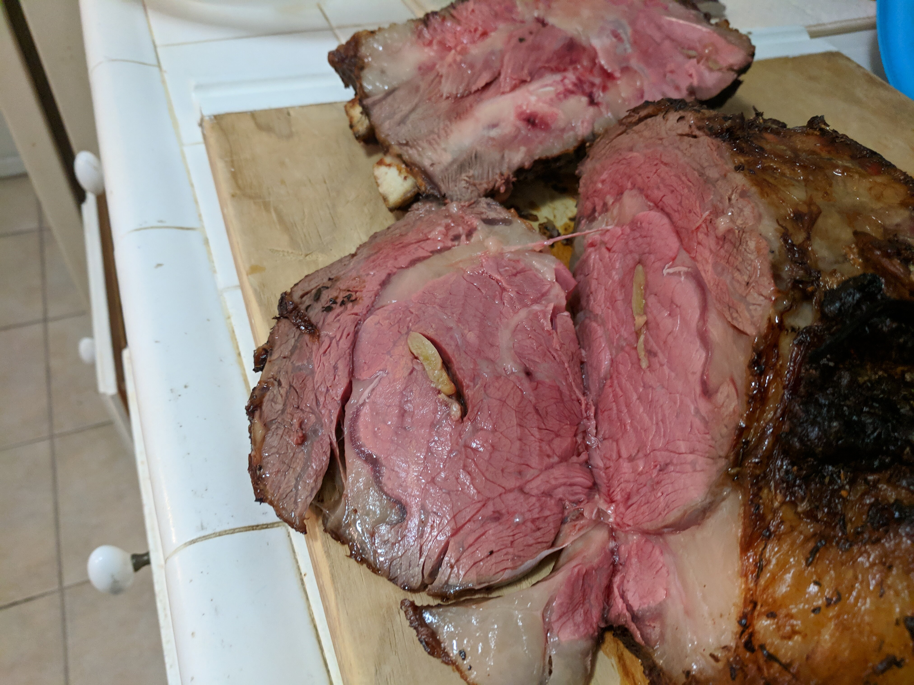

A nicely done prime rib
This is a specific formula for achieving a perfectly pink prime rib cooked somewhere a shade under medium rare. To use this method you must have a full-sized, modern oven with a digital temperature setting that indicates when it is preheated. Older ovens with manual controls can vary greatly, and the doors may not have the proper insulation.
Ingredients
- 4 pounds prime rib roast
- ¼ cup unsalted butter, softened
- 1 tablespoon freshly ground black pepper
- 1 teaspoon herbes de Provence
- kosher salt
Steps
- Place rib roast on a plate and bring to room temperature, about 4 hours.
- Preheat an oven to 500 degrees F (260 degrees C).
- Combine butter, pepper, and herbes de Provence in a bowl; mix until well blended. Spread butter mixture evenly over entire roast. Season roast generously with kosher salt.
- Roast the 4-pound prime rib (see footnote if using a larger and smaller roast) in the preheated oven for 20 minutes. Turn the oven off and, leaving the roast in the oven with the door closed, let the roast sit in the oven for 2 hours. Remove roast from the oven, slice, and serve.
Return to top
Return to main page